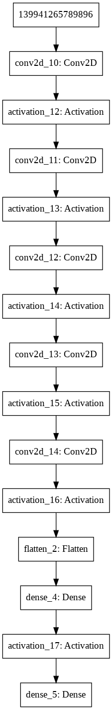
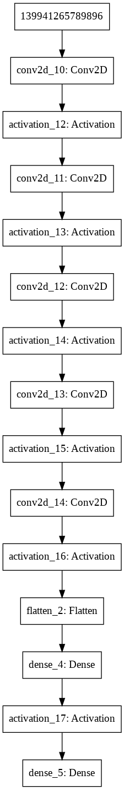

Double Deep Q-Learning解説
Model

1 2 3 4 5 | def bubble_sort(items): for i in range(len(items)): for j in range(len(items) - 1 - i): if items[j] > items[j + 1]: items[j], items[j + 1] = items[j + 1], items[j] |

1 2 3 4 5 | def bubble_sort(items): for i in range(len(items)): for j in range(len(items) - 1 - i): if items[j] > items[j + 1]: items[j], items[j + 1] = items[j + 1], items[j] |